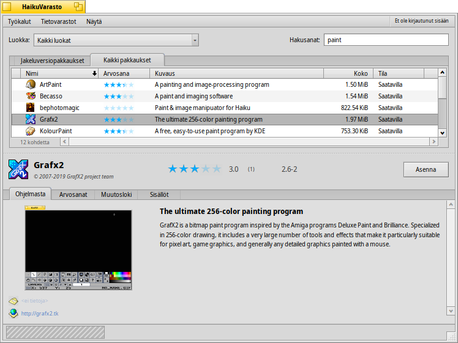

| Hakemisto |
| The Filter The List The Info Area Tools and Show menus Creating a User Account Rating and Commenting Diagnostic Logs |
 HaikuVarasto
HaikuVarasto
| Työpöytäpalkki: | ||
| Sijainti: | /boot/system/apps/HaikuDepot | |
| Asetukset: | ~/config/settings/HaikuDepot/main_settings ~/config/cache/HaikuDepot/ - Välimuistissa olevat kuvakkeet, kuvakaappaukset, kuvaukset jne. |
HaikuVarasto on keskeinen sovellus ohjelmistopakkaustesi hallintaan. Sovelluksella voit selata ja etsiä tietovarastoja sekä asentaa, päivittää ja poistaa pakkauksia. HaikuVarasto alkaa Jakeluversiopakkaukset-luettelolla, jossa on ohjelmistoja, jotka tuntuvat kiinnostavan monia käyttäjiä.

Toinen välilehti näyttää , näyttöön vaihtuu pienempi kuvake ja lisätiedot järjestetään sarakkeisiin:
 Suodatin
Suodatin
Ylimpänä löydämme muutamia keinoja suodattaa allapuolella näkyvien saatavilla olevien pakkausten luetteloa:
-ponnahdusvalikko sallii sinun rajoittaa luettelon yksittäisiksi luokiksi kuten "Audio" tai "Pelit".
-tekstikenttäsuodattimet luetteloivat ne pakkaukset, jotka on kirjoitettu (välilyönneillä eroteltuina) merkkijonoina niminä tai kuvauksina.
Valikkopalkin -valikko määrittää, mitkä verkkovarastot kysellään. "Paikallinen"-pakkaukset ovat niitä, jotka on asennettu jostain muualta kuin verkkotietovarastosta; ehkä USB-tikulta tai joltain webbisivulta ladatut tai pakkaukset, jotka olet rakentanut itse.
Luettelo
Kuten missä tahansa Seuraaja-ikkunassa, voit valita asiayhteysvalikosta mitkä sarakkeet näytetään napsauttamalla sarakeotsaketta hiiren kakkospainikkeella. Ykköspainike lajittelee luettelon tuon sarakkeen mukaiseksi. Tietysti voit järjestää sarakkeet uudelleen raahaamalla ne uuteen paikkaan.
Pakkauksen tilasarakkeessa voi olla yksi seuraavista tiloista:
: Pakkaus on asennettu ja valmiina käytettäväksi.
: Pakkaus on tässä tietovarastossa ja se voidaan ladata ja asentaa. Jos pakkauksella on riippuvuuksia muihin pakkauksiin, sinulle kerrotaan siitä asennuksen aikana ja tarjotaan mahdollisuus ladata/asentaa kaikki välttämätön.
: Odottaa näytetään pakkaukselle, jota jonotetaan lataukseen/asennukseen. Pakkauksen latauksen aikana edistyminen näytetään prosentteina.
: Asennettuun pakkaukseen on saatavilla uudempi versio.
Voit tarttua pisteviivaan pakkausluettelon välissä ja vaakasuoraan tietoalueeseen pakkausluettelon koon muuttamiseksi.
Tietoalue
Alimmaisena on alue, joka näyttää tietoja pakkauksesta, joka on parhaillaan valittuna luettelossa.
Pakkausnimen, tekijän, arvosanan ja version oikealla puolella on painike, joka – riippuen pakkauksen nykyisestä tilasta – sallii sinun , tai se. Jos pakkaus on jo asennettu, löydät täältä lisäpainikkeen, joka sovelluksen.
Alla on neljä välilehteä: Ohjelmasta, Arvosanat, Muutosloki ja Sisällöt.
Ensimmäisessä välilehdessä on yksityiskohtainen pakkauskuvaus sekä kuvakaappaukset ja yhteystiedot ja pakkausta ylläpitävän ryhmän verkko-osoite, jos sellainen on saatavilla. Kuvakaappauksen pienoiskuvan napsauttaminen avaa uuteen ikkunaan kuvan suurikokoisemman version
Toisessa välilehdessä näytetään arvosanat ja käyttäjäkommentit, jos niitä on saatavilla.

Vasemmalla on tilasto, joka näyttää kuinka monelta käyttäjältä pakkaus sai tietyn määrän (1...5) tähtiä.
Keskellä on käyttäjäkommentteja käyttäjätunnuksilla, heidän antamiensa tähtien määrä ja mistä pakkausversiosta he antoivat arvosanan tai kommentin. Löydät lisätietoja siitä kuinka voit itse antaa pakkaukselle arvosanan alempaa.
Täältä löydät pakkauksen kaikkien toistaiseksi julkaistujen versioiden yksityiskohtaisen historian, jos pakkauksen ylläpitäjä tarjoaa nuo tiedot.
Viimeinen välilehti näyttää kaikki tiedostot ja kansiot, jotka sisältyvät pakkaukseen. Tämä toimii vain jo ladatuissa pakkauksissa.
Työkalut- ja Näytä-valikko
-valikosta ikkunan yläosassa löydät rivin . Tämä pyytää tietovarastoista ajantasaisen luettelon kaikista saatavilla olevista pakkauksista. Toinen rivi on . Se avaa Tietovarastot-asetusohjelman tietovarastojen lisäämiseksi/poistamiseksi tai tietovarastojen ottamiseksi käyttöön tai niiden poistamiseksi käytöstä.
avaa Ohjelmistopäivittäjän päivitettyjen pakkausten etsimiseksi ja asentamiseksi.
Valikosta voit valita pakkausten luettelosta ja . Normaalikäyttäjille ne eivät ole kiinnostavia ja vain sekoittaisivat luetteloa. Ne ovat kuitenkin tärkeitä ihmisille, jotka tarvitsevat pakkausten kirjastoja, otsaketiedostoja jne. niistä riippuvien ohjelmien kehittämiseksi ja kääntämiseksi ohjelmakielistä toimivaksi ohjelmiksi.
Kiinnostavampia ovat valitsimet, jotka näyttävät vain ja .
Käyttäjätilin luominen
Voidaksesi antaa pakkaukselle arvosanan sinulla on oltava tili Haiku Depot-palvelimella, joka palvelee kaikkia pakkauksia ja kirjaa arvosanat sekä käyttäjäkommentit. Voit luoda tilin HaikuVarasto-sovelluksella napsauttamalla nykytilanteen näyttävän valikkopalkin oikeassa yläkulmassa olevaa valikkoa: . Valinta avaa ikkunan kahdella välilehdellä; yhdellä voit kirjoittaa käyttäjätunnuksesi ja salasanasi (sitten kun sinulla on ne) kirjautuaksesi, ja toisessa luot uuden tilin:

Tilin luomiseksi sinun on:
- käytettävä käyttäjätunnusta, joka koostuu pienistä kirjaimista ilman erikoismerkkejä (äöå)
- käytettävä salasanaa, jossa on vähintään 8 merkkiä, joista vähintään 2 on suuria kirjaimia ja 2 numeroita
- tarjottava sähköpostiosoite (jos haluat uuden salasana lähetettäväksi siinä tapauksessa että unohdat sen)
- ratkaistava captcha-kuva-arvoitus
- napsauta valintoja vahvistaaksesi, että olet yli 16-vuotias ja olet lukenut alapuolella linkitetyt käyttöehdot.
Kirjautumisen jälkeen HaikuVaraston valikon yläoikealla lukee , mikä näyttää käyttäjätunnuksesi. Valikko tarjoaa nyt sinulle tai .
Arvosanat ja kommentointi
Kun olet luonut käyttäjätilin ja kirjautunut sisään, voit antaa pakkaukselle arvosanan ja jättää kommentin, jos haluat. Liikuta vain hiiren kohdistinta pakkauksen tietoalueen arvosanatähtien päällä ja ne muuttuvat -painikkeeksi. Napsauta sitä arvosanaikkunan avaamiseksi:

Tässä liikutat hiiren kohdistinta tähtien yläpuolella niiden sytyttämiseksi ja arvosanasi valitsemiseksi, voit myös valita tasonumeron sovelluksen stabilisuusarvioksi ja poimia valinnaisen kommentin kielen. Jotta kommentti olisi merkityksellinen, sinun pitäisi työskennellä arvioitavalla sovelluksella tutustuaksesi sen ominaisuuksiin, ohjelmointivirheisiin ja oikkuihin. Ja älä kirjoita seuraavaa suomalaista suurromaania... pidä kommenttisi lyhyenä, lempeänä ja kohteliaana. :)
-painikkeen napsauttamisen jälkeen tiedot lähetetään palvelimelle. Sinun on ehkä siirryttävä -valikkoon valitsemaan ennen kuin voit nähdä muutoksesi.
Milloin tahansa voit palata ja muokata kommenttiasi tai antaa arvosanan uudelleen. Voit myös piilottaa arvioinnin muilta käyttäjältä poistamalla valinnan valintaruudusta .
Diagnostic Logs
As HaikuDepot is used, it interacts with network as well as local services. Things can go wrong, sometimes in ways that were not anticipated when the application was written. In those cases the error message may be quite unspecific. To help diagnosing a given problem, HaikuDepot can provide a log of what the application does.
An error message may suggest to view the logs to get further in-depth information or you may be asked to provide the log when you file an issue at the Haiku bug tracking system.
To see the diagnostic logs, HaikuDepot needs to be started from Terminal:
HaikuDepot -v debug
The command uses the -v flag to control the verbosity of the diagnostic logs. Possible values are: off, info, debug and trace. Using off will do only a small amount of logging, while trace does it in the highest detail.
As HaikuDepot starts up and when interacting with the application, you will see text scroll by in the Terminal window; this is the diagnostic log.